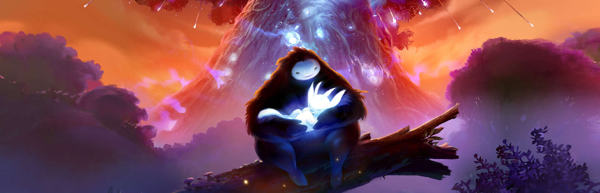
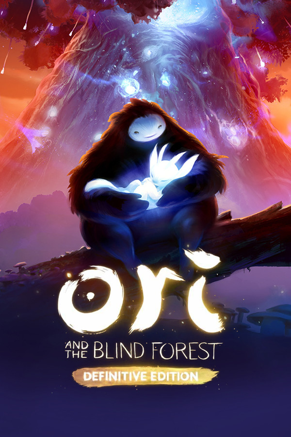
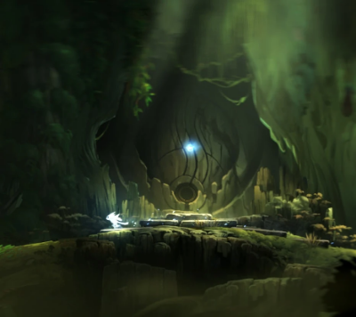
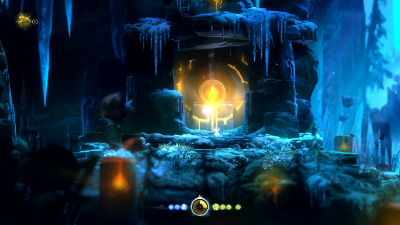
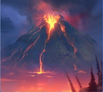

Ninguém ali é mau à toa: até a raiva nasce de uma perda.
Estúdio: Moon Studios
País: Áustria
Ano: 2015
Gênero: Metroidvania
Temas: Luto, Perdão, Família, Natureza
Durante uma tempestade, o pequeno espírito Ori cai da Árvore Espiritual e é adotado por Naru, que cuida dele como filho. Quando a floresta de Nibel começa a morrer, Ori perde Naru e fica sozinho.
Com a ajuda de Sein, a luz da Árvore, Ori tenta salvar a floresta. A grande inimiga é a coruja Kuro, mas o jogo mostra que ela também perdeu os filhos, e a dor dela explica a raiva. Não existe um vilão simples, só pessoas machucadas tentando proteger o que amam.
É uma história sobre luto, perdão e família, contada quase sem palavras, só com imagens e música. A floresta acompanha esse caminho: ela sofre junto com os personagens e volta a viver quando eles conseguem se perdoar.
A Moon Studios foi fundada em 2010 por Thomas Mahler e Gennadiy Korol. Mahler estudou escultura na Academia de Belas Artes de Viena e trabalhou como artista na Blizzard antes de abrir o estúdio.
A música, um dos pontos mais lembrados do jogo, é de Gareth Coker. Ori and the Blind Forest saiu em 2015, publicado pela Microsoft, e ganhou a continuação Ori and the Will of the Wisps em 2020.
A sede oficial fica em Viena, na Áustria, mas a Moon Studios funciona como um estúdio virtual: não aluga escritório, contrata pessoas pelo mundo inteiro e trabalha pela internet. Em 2020, eram mais de 80 pessoas de 43 países.
Por isso, Ori não pertence a um único lugar. O jogo é um exemplo de como uma equipe espalhada pelo mundo consegue fazer um trabalho muito unido.


